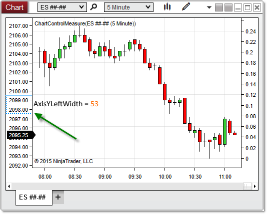

|
<< Click to Display Table of Contents >> AxisYLeftWidth |


|
AxisYLeftWidth
|
<< Click to Display Table of Contents >> AxisYLeftWidth |
|
Measures the distance (in pixels) between the y-axis and the left edge of a chart.
A double representing the number of pixels separating the y-axis and the left edge of the chart.
<ChartControl>.AxisYLeftWidth
protected override void OnRender(ChartControl chartControl, ChartScale chartScale) |
Based on the image below, AxisYLeftWidth reveals that the space between the y-axis and the left edge of the chart is 53 pixels on this chart.

Note: When there are no left-justified data series on a chart, AxisYLeftWidth will return 0, as there will be no space between the y-axis and the left margin. |